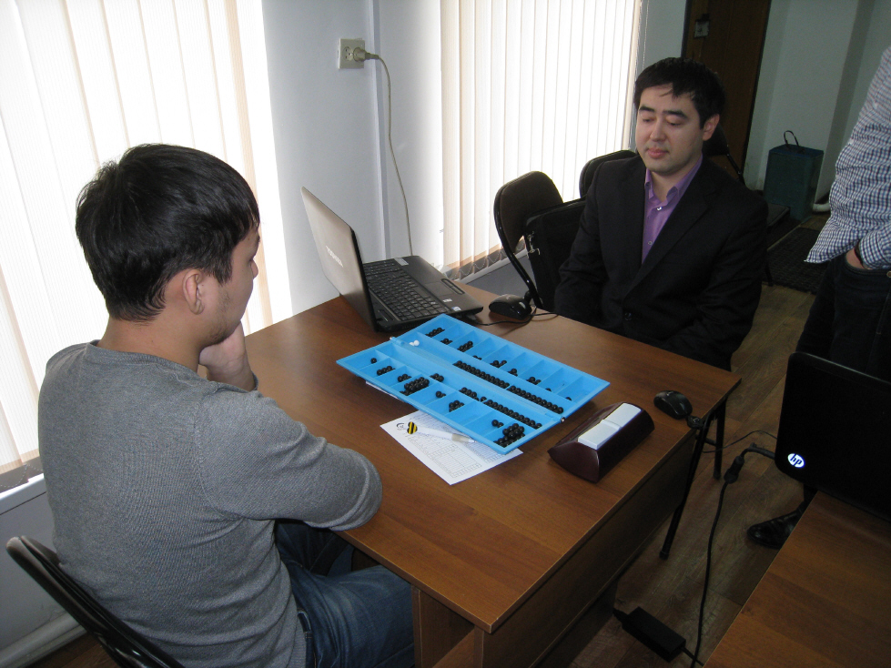
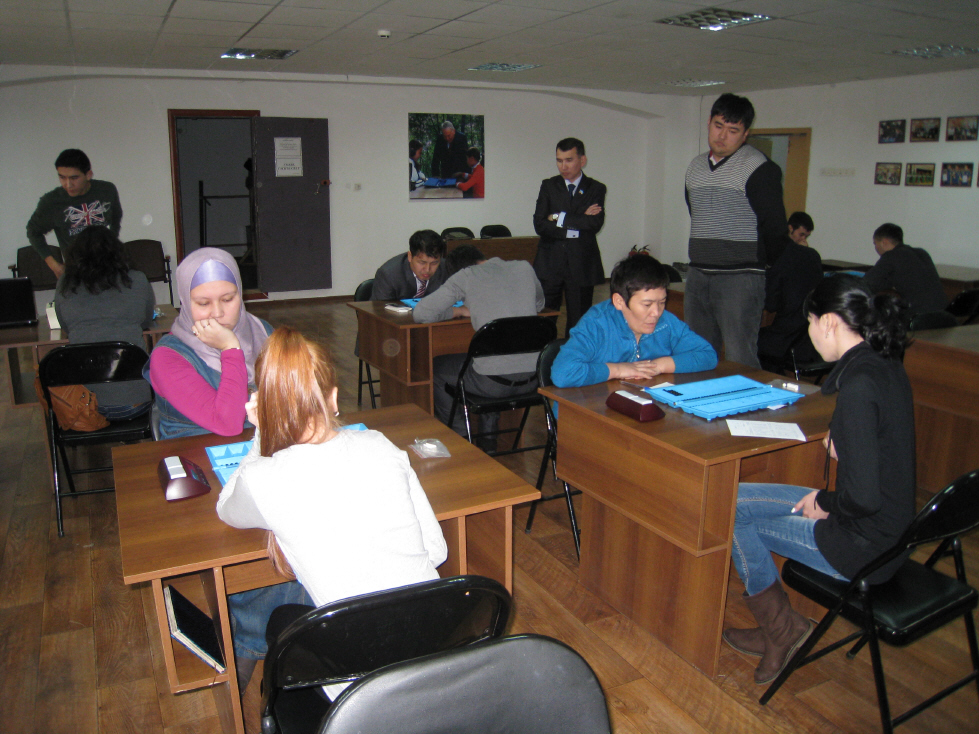
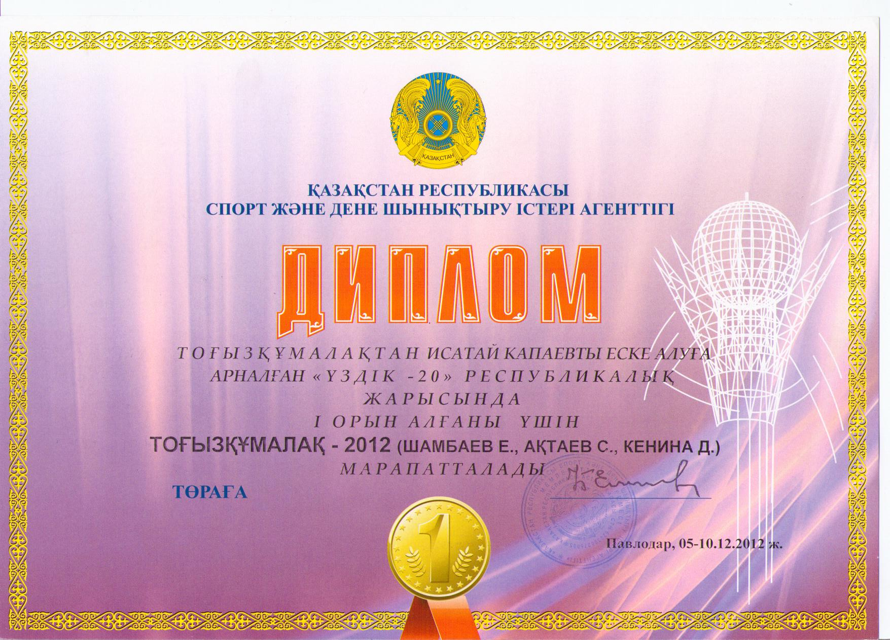
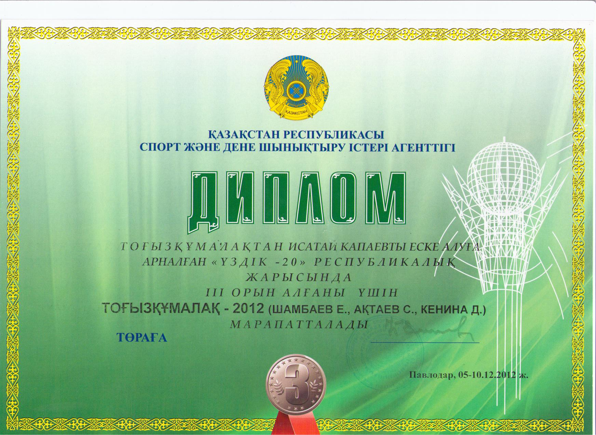
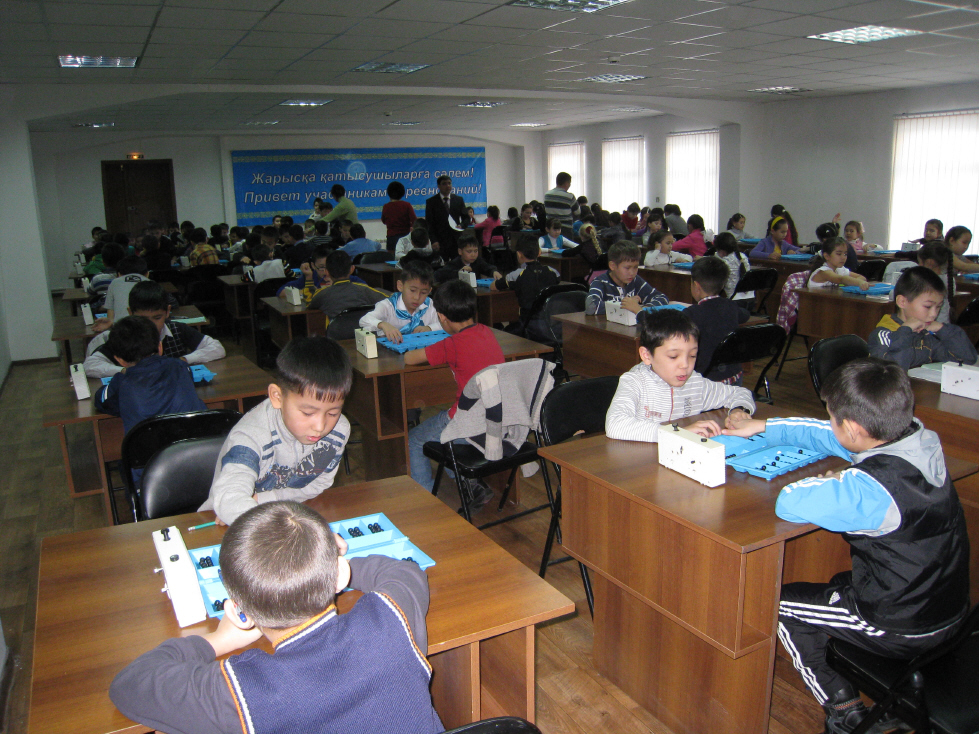
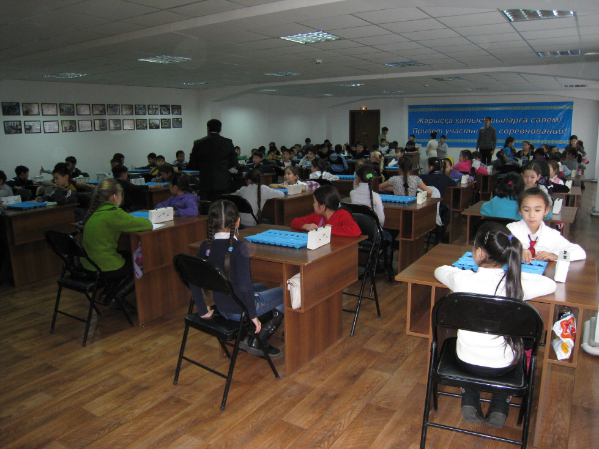
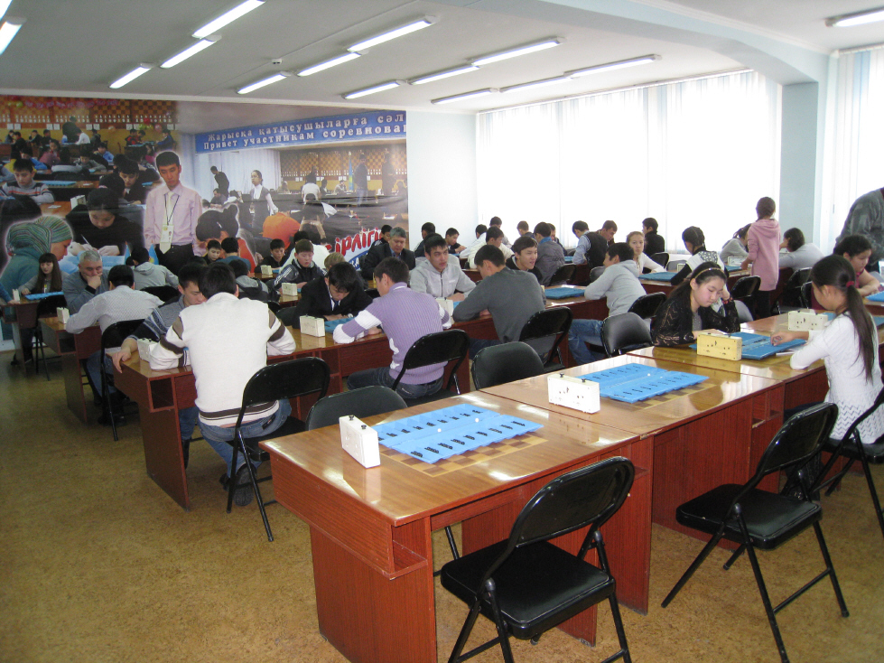

Лучшая двадцатка-2012
С 5 по 10 декабря 2012 года в Павлодарском Доме шахмат прошел ежегодный турнир по тогызкумалаку "Лучшая двадцатка", посвященный памяти Исатая Капаева, популяризатора игры тогызкумалак в Павлодарской области в советские годы.
Среди участников было семь международных мастеров (Серик Актаев, Максат Шотаев, Батырхан Абильбеков, Нурбек Кабиев, Диана Кенина, Айнур Жакапбаева, Гульжан Магауова) и пять мастеров спорта (Ернур Мерешев, Жанат Каймульдин, Алмаз Жаксылыков, Роза Раимбекова, Анастасия Фоос).
Компьютерная программа "Тогызкумалак" (создателями которой являются Ернар Шамбаев, Серик Актаев и Диана Кенина) во второй раз участвовала в этом турнире, причем если в прошлом году она соревновалась только с женщинами, то в этом году было принято решение запустить ее в оба турнира: и среди женщин, и среди мужчин.
Программа выступила успешно, победив в женском турнире и разделив 1-3 места в мужском (по дополнительным показателям она оказалась третьей). Особенно несладко пришлось международным мастерам, шестеро из них признали поражение в партиях против искусственного интеллекта.


Итоги "Лучшей двадцатки":Мужской турнир
1. Нурбек Кабиев (мсмк) - 5 из 7
2. Жанат Каймульдин (мс) - 5 из 7
3. Программа "Тогызкумалак-2012" (мс) - 5 из 7
4-5. Серик Актаев (мсмк) - 3,5 из 7
Максат Шотаев (мсмк) - 3,5 из 7
6-8. Ернур Мерешев (мс) - 2 из 7
Алмаз Жаксылыков (мс) - 2 из 7
Батырхан Абильбеков (мсмк) - 2 из 7
Женский турнир
1. Программа "Тогызкумалак-2012" (мс) - 4 из 5
2. Роза Раимбекова (мс) - 4 из 5
3. Гульжан Магауова (мсмк) - 3 из 5
4. Диана Кенина (мсмк) - 2 из 5
5. Айнур Жакапбаева (мсмк) - 2 из 5
6. Анастасия Фоос (мс) - 0 из 5


Параллельно с "Лучшей двадцаткой" в Павлодаре проходило соревнование по тогызкумалаку на призы газеты "Сарыарка самалы" (до 9 лет, до 11 лет, до 13 лет, 13 лет и старше), собравшее свыше 200 участников и показавшее популярность казахской народной игры в Павлодарской области.



Все материалы сайта можно использовать только с разрешения автора (Е. Шамбаева). При перепечатке активная ссылка на данный сайт обязательна.